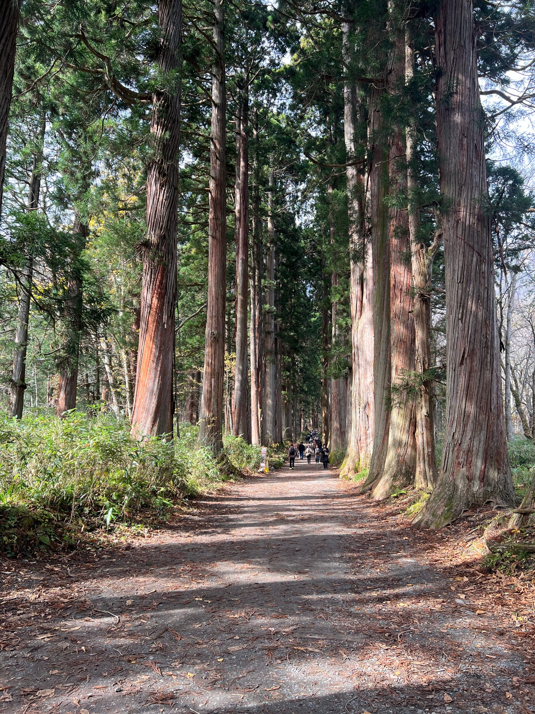

01 / IMG_1523
Ⅰ. 鏡池・山的倒影
一池秋色，兩座山巒
雲霧掠過戶隱連峰，灰白岩稜、淡金山林與藍天一同落進鏡池。水面只泛起細小波紋，讓山的輪廓在上下兩個世界裡相互呼應。
選片筆記與拍攝資訊
保留山稜與倒影的完整關係，畫面也避開了同組照片裡較醒目的白色設施。
iPhone 13 Pro Max · 26mm · f/1.5（等效焦距）ISO 50 · 原始尺寸 4032 × 3024
原始檔案：IMG_1523.HEIC

TOGAKUSHI · AUTUMN 2026先把山收進一池倒影，再把腳步交給森林。
從鏡池到隨神門，從巨杉的光影到山裡的社殿，
用一段慢慢走過的路，記住長野的秋天。
這是一段由開闊走向幽深、再回到日常的秋日散步。鏡池映出戶隱連峰的輪廓；參道裡，枝條、石燈籠與巨杉輪番引路。幾張回眸與背影穿插其間，讓風景也成為自己的旅行記憶。
雲霧掠過戶隱連峰，灰白岩稜、淡金山林與藍天一同落進鏡池。水面只泛起細小波紋，讓山的輪廓在上下兩個世界裡相互呼應。
保留山稜與倒影的完整關係，畫面也避開了同組照片裡較醒目的白色設施。
iPhone 13 Pro Max · 26mm · f/1.5（等效焦距）換一個方向，深色林帶在池畔連成一線；遠山隱在低雲後，水中的倒影比天空更深。少了前景干擾，視線可以安靜地停在山與水之間。
以深色樹林分隔天空與水面，和前一張明亮的山景形成光影變化。
iPhone 13 Pro Max · 26mm · f/1.5（等效焦距）岸邊草徑從右下角伸向遠方，金褐色草葉、疏落枝梢與池水一起拉開景深。這一張讓人從觀看倒影，轉為想沿著池畔走上一段。
超廣角保留岸線與步道，用近景帶出旅人站立的位置。
iPhone 13 Pro Max · 13mm · f/1.8（等效焦距）寬幅視野把池岸、秋林與起伏山稜接成一整幅風景。天空與倒影之間，池畔樹林像一道細長的筆觸，將這段秋日停留慢慢展開。
同一全景保留 IMG_E1531 版本，避免與 IMG_1531 重複；燈箱可看完整寬幅。
iPhone 13 Pro Max · 26mm · f/1.5（等效焦距）石鳥居藏在疏林之間，參拜的人們沿著道路走向入口。鏡池的開闊在此收束，接下來的風景，要靠一步一步走進去。
作為場景轉換，保留入口與旅人動線，交代由池畔轉入參道的段落。
iPhone 13 Pro Max · 26mm · f/1.5（等效焦距）刻有「戶隱神社」的石碑立在落葉旁，後方木牌與林徑把方向交代得清楚。沒有宏大的景觀，卻是旅途中很實在的一個起點。
留下可辨識的地點標記，讓特輯有清楚的行程線索。
iPhone 13 Pro Max · 26mm · f/1.5（等效焦距）落葉後的枝幹向天空交錯，道路兩旁還留著鮮綠的低矮植被。參道筆直向前，遠處的行人縮成小小身影，深秋的空間感因此更明確。
比對相近的 IMG_1534 後選這張，中央道路和上方枝條形成更完整的延伸。
iPhone 13 Pro Max · 26mm · f/1.5（等效焦距）旅人站在林道中央，淺色衣著映著樹影與綠意。寬鬆的留白保留了身後的路，也讓這張照片成為一路散步的輕盈註腳。
IMG_1536／1537 中保留這張作為人物段落；全身、道路與枝條都有完整空間。
iPhone 13 Pro Max · 26mm · f/1.5（等效焦距）參道轉入更高大的樹林，粗壯杉幹靠著路邊站立。地上的落葉與側面的光，讓前方幽深的綠意多了一點暖色。
用豎幅收進樹幹高度與腳下路面，銜接後續的巨杉篇章。
iPhone 13 Pro Max · 26mm · f/1.5（等效焦距）幾株杉樹並立，樹皮由灰褐漸漸轉為暖紅，根部覆著青苔。仰望的角度讓樹幹向高處延伸，枝葉間只留下窄窄的天空。
與 IMG_1539 擇一，這張樹幹分布較清楚，適合呈現巨杉的體量。
iPhone 13 Pro Max · 26mm · f/1.5（等效焦距）一對石燈籠守在參道兩側，隨神門的朱紅色從綠蔭裡浮現。沿路前行的參拜者，也成為畫面裡自然的比例尺。
比近距離連拍多留出石燈籠和林道，先交代隨神門所在的環境。
iPhone 13 Pro Max · 26mm · f/1.5（等效焦距）門額、注連繩與覆著綠意的屋頂構成畫面重心。門洞後透出高大的杉木，像是把森林框成一幅垂直的畫。
在 IMG_1544–1546 中選取門面較完整的一張；保留現場仰拍的視角。
iPhone 13 Pro Max · 26mm · f/1.5（等效焦距）清水沿著石砌小溝流過，杉樹根部與石面覆著青苔。宏偉的林蔭大道旁，也有這樣低聲、細小而值得停留的風景。
和 IMG_1549 相比，這張水道更完整，視線可以沿著溪流一路深入。
iPhone 13 Pro Max · 26mm · f/1.5（等效焦距）兩排高聳杉木向前延伸，樹根、落葉與光斑在路面相遇。遠方行人的身影很小，讓參道有了近似長廊的深度。
選為本輯主視覺；人物干擾較少，樹列、道路與光線的層次清楚。
iPhone 13 Pro Max · 26mm · f/1.5（等效焦距）樹幹裂開一道深色空洞，裸露木質與隆起根部交纏在一起。這張照片將目光從整排杉林拉回一棵樹，讀出風化與生長的痕跡。
以細節照打斷連續的大景，補上樹皮、苔色與樹根的質地。
iPhone 13 Pro Max · 26mm · f/1.5（等效焦距）旅人站在粗壯樹幹前，淺色衣著和覆苔樹根形成柔和對比。人物與古樹同框，讓樹的尺度變得具體，也留下到此一遊的溫度。
IMG_1556–1558 三張中選豎幅，保留較多樹幹高度及完整人物。
iPhone 13 Pro Max · 26mm · f/1.5（等效焦距）黃橙色葉片沿著枝梢亮起，石階向後延伸，旅人回身停留。從深綠杉林走到這裡，畫面忽然多了輕快而溫暖的顏色。
IMG_1560／1561 中保留後者，人物與右側秋葉形成較明確的呼應。
iPhone 13 Pro Max · 26mm · f/1.5（等效焦距）細密樹枝在天空前舒展，黃葉散落在山坡之間，石階與行人藏在下方。這裡的秋色不再濃密，卻把季節的轉換交代得格外清楚。
留下由杉林轉入山坡落葉林的景色，讓參拜段落有一口呼吸的空間。
iPhone 13 Pro Max · 26mm · f/1.5（等效焦距）木造屋簷的曲線、層疊斗拱與注連繩，讓小巧社殿顯得沉穩。參拜的人們在前方依序等候，為森林行旅留下具體的信仰場景。
社殿正面與屋頂細節完整，保留現場參拜人潮，作為旅途紀錄。
iPhone 13 Pro Max · 26mm · f/1.5（等效焦距）白色山牆映著深色岩壁，參拜者站在注連繩下。一路走過林道與石階，最後的抵達並不鋪張，而是人們依序向前的一小段停留。
本輯唯一的奧社正面紀錄，保留建築輪廓與現場氛圍。
iPhone 13 Pro Max · 26mm · f/1.5（等效焦距）鏡頭轉向參道旁的林間，近處細枝、低矮綠葉與後方杉幹交錯。沒有明確終點的構圖，讓森林從一條道路，重新變成一片空間。
以橫幅林相轉換節奏，避免返程都是相似的參道視角。
iPhone 13 Pro Max · 45mm · f/1.5（等效焦距）一位旅人的背影走向前方，兩側高樹與覆苔石塊沿路展開。去程是期待，返程則多了從容；同一條路，也有不同的看法。
IMG_1568–1573 的返程照片中保留這張，中央背影與道路方向簡潔清楚。
iPhone 13 Pro Max · 26mm · f/1.5（等效焦距）高大的杉幹之間，朱紅色隨神門又一次出現。來時像入口，回看時像句點；行人的步伐將兩段相同的風景，走成不同的記憶。
保留遠處紅門作為視覺落點，和前面的門前照片形成前後呼應。
iPhone 13 Pro Max · 26mm · f/1.5（等效焦距）黑色屋簷、白色暖簾與店前往來的旅人，把畫面帶回熱鬧的入口周邊。走完這一段路，森林的寧靜仍留在身後，旅程則繼續往前。
以入口周邊的生活場景收尾，讓特輯從山水、參道回到旅人的日常。
iPhone 13 Pro Max · 26mm · f/1.5（等效焦距）這裡還沒有照片。試試其他篇章、搜尋文字，或按 ♡ 收藏喜歡的照片。
逐張查看全資料夾後，依構圖、主題辨識度、相近畫面的差異與敘事節奏選片。24 張入選，31 個檔案暫不展出；原始檔案全部保留。時間、焦距與光圈依原檔 EXIF 記錄，網頁圖片另轉為 sRGB JPEG 並縮圖。
鏡池保留正面倒影、林帶、岸線與全景四種視角；IMG_1531 與 IMG_E1531 擇一。多組連拍各保留一張，讓每次翻頁都有新的內容。
保留林道回眸、古樹合影與秋葉前的人物照，以及參拜與返程的背影。風景與人物交替，留下這趟旅行的尺度和溫度。
略過鏡頭上緣遮擋的 IMG_1525、大幅傾斜的 IMG_1530 和相機截圖 IMG_1565。展示版只做色彩空間轉換與縮圖，不移除人物、不另造景物；豎幅與全景可完整檢視。
地點補充：鏡池以映照戶隱連峰聞名；戶隱神社奧社參道中段有隨神門，門後接續杉並木。地點背景參考下列官方資料，照片文字以畫面描述為主。
長野市｜鏡池戶隱神社｜歷史與各社戶隱神社｜奧社之森照片時間為原檔記錄。收藏僅儲存在目前的瀏覽器，可用來標記下一版想保留的照片。